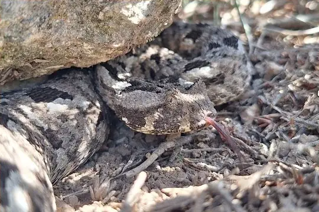
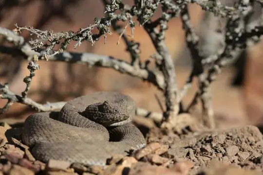
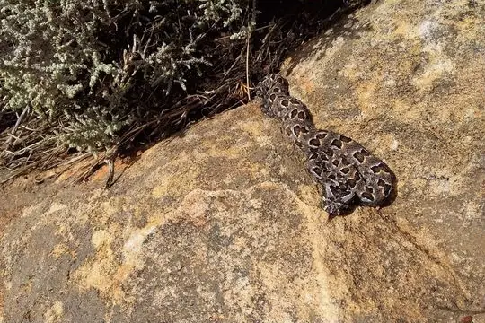
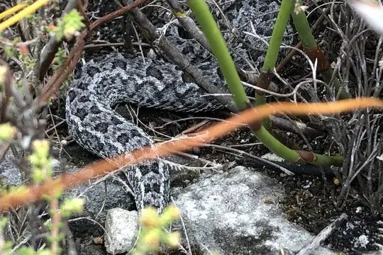

Bitis
The genus Bitis (family Viperidae) has 18 species in SnakeList (all venomous), recorded in 40 countries.
- 18species
- 18venomous
- 40countries
About the genus
A genus of the family Viperidae (vipers and pit vipers).
Species
Showing 18 species

Albany AdderBitis albanica- No photo yetAngolan AdderBitis heraldica
- No photo yetBale Mountains adderBitis harenna
 Desert Mountain AdderBitis xeropaga
Desert Mountain AdderBitis xeropaga Dwarf Puff AdderBitis peringueyi
Dwarf Puff AdderBitis peringueyi Ethiopia ViperBitis parviocula
Ethiopia ViperBitis parviocula Gaboon ViperBitis gabonica
Gaboon ViperBitis gabonica Horned AdderBitis caudalis
Horned AdderBitis caudalis Kenya Horned ViperBitis worthingtoni
Kenya Horned ViperBitis worthingtoni Many-horned AdderBitis cornuta
Many-horned AdderBitis cornuta Mountain AdderBitis atropos
Mountain AdderBitis atropos Namaqua Dwarf AdderBitis schneideri
Namaqua Dwarf AdderBitis schneideri
Plain Mountain AdderBitis inornata Puff AdderBitis arietans
Puff AdderBitis arietans
Red AdderBitis rubida Rhinoceros ViperBitis rhinoceros
Rhinoceros ViperBitis rhinoceros Rhinoceros Viper (nasicornis)Bitis nasicornis
Rhinoceros Viper (nasicornis)Bitis nasicornis
Southern AdderBitis armata
No snakes in Bitis match.
About the genus Bitis
- Family: Viperidae.
- Recorded in: Angola, Benin, Botswana, Burkina Faso, Burundi, Cameroon, Central African Republic, Chad, Democratic Republic of the Congo, Equatorial Guinea, Eritrea, Eswatini, Ethiopia, Gabon, Ghana, Guinea, Guinea-Bissau, Ivory Coast, Kenya, Lesotho, Liberia, Malawi, Morocco, Mozambique, Namibia, Niger, Nigeria, Republic of the Congo, Rwanda, Senegal, Sierra Leone, Somalia, South Africa, South Sudan, Sudan, Tanzania, Togo, Uganda, Zambia, Zimbabwe.